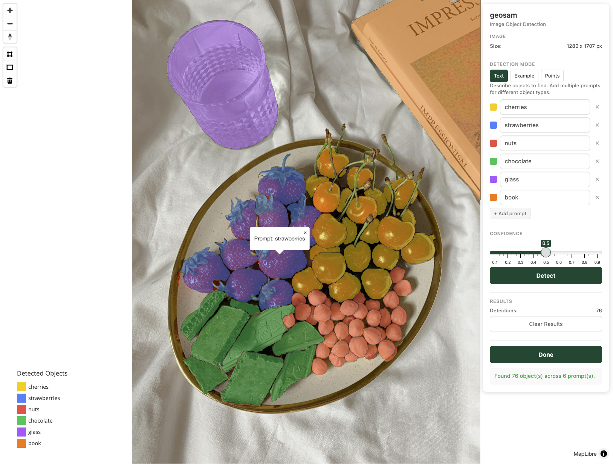

library(geosam)
# Path to bundled sample image
fruit <- system.file("extdata", "fruit_plate.jpg", package = "geosam")
# Detect strawberries
berries <- sam_image(fruit, text = "strawberry")
berriesWhile geosam is built to work with geographic data, the package also honors SAM’s core functionality: extracting from photos, screenshots, or any image file.
Basic workflow
To work with non-georeferenced images, use sam_image(). We’ll work with this sample photo for testing which is bundled in the package.

To extract objects from an image, we pass the image path to sam_image():
We get a geosam_image object back. This object can be plotted with plot():
plot(berries)
SAM3 has found the strawberries. We can also try different prompts on the same image, then combine the plots with add = TRUE, much as we would in typical base R plotting.
Let’s try out different prompts on the same image:
Extracting results
Much like extracted objects from satellite images, we can convert our extractions to “spatial” objects in pixel coordinates with sam_as_sf(). Let’s try it out:
berries_sf <- sam_as_sf(berries)
berries_sfSimple feature collection with 9 features and 3 fields
Geometry type: POLYGON
Dimension: XY
Bounding box: xmin: 178 ymin: 569 xmax: 694 ymax: 1144
CRS: NA
mask_id score area_px geometry
1 1 0.9461025 19024 POLYGON ((259 1079, 259 107...
2 2 0.8614167 14913 POLYGON ((401 1114, 401 111...
3 3 0.9214256 13157 POLYGON ((528 859, 528 858,...
4 4 0.9081426 12381 POLYGON ((366 997, 366 996,...
5 5 0.9315553 12627 POLYGON ((436 884, 436 883,...
6 6 0.9396250 13655 POLYGON ((635 907, 635 906,...
7 7 0.8776799 11476 POLYGON ((477 1144, 477 114...
8 8 0.8411812 25324 POLYGON ((520 1027, 520 102...
9 9 0.9475598 18611 POLYGON ((562 757, 562 756,...Note that the result includes area_px (area in square pixels) instead of area_m2.
Interactive exploration
For hands-on detection with clicking and drawing you can use sam_explore_image(). Pass an image path and you’ll launch a Shiny gadget that allows you to interactively explore your image. The interface uses mapgl and MapLibre under the hood, so you can pan and zoom as if it were an interactive map. Let’s try it out:
result <- sam_explore_image(fruit)The text option allows you to enter up to six text prompts to extract interactively from the image. Here, we show an extraction detecting cherries, strawberries, nuts, chocolate, glass, and book from the image. Our interactive viewer finds all of these objects, and gives us a map legend along with pop-ups.

The app also supports “Example” mode where you can draw around objects to use as exemplars and “Points” mode where you can click to identify objects; see the Interactive vignette for examples of this in action with satellite imagery.
When you click “Done”, results are returned as a geosam_image object to your R session so long as you’ve assigned the result to a variable. Let’s take a look at it:
resultSimple feature collection with 76 features and 5 fields
Geometry type: GEOMETRY
Dimension: XY
Bounding box: xmin: 129 ymin: 0 xmax: 1280 ymax: 1493
CRS: NA
First 10 features:
mask_id score area_px prompt prompt_color geometry
1 1 0.7182140 8287 cherries #facc15 MULTIPOLYGON (((1024 753, 1...
2 2 0.5578738 3340 cherries #facc15 POLYGON ((779 901, 779 900,...
3 3 0.6574008 2829 cherries #facc15 POLYGON ((659 961, 659 959,...
4 4 0.7631093 8354 cherries #facc15 POLYGON ((842 825, 842 824,...
5 5 0.8512306 9918 cherries #facc15 POLYGON ((885 1102, 885 110...
6 6 0.7179651 3449 cherries #facc15 POLYGON ((658 729, 658 728,...
7 7 0.8434036 10636 cherries #facc15 POLYGON ((1014 972, 1014 97...
8 8 0.8085137 8738 cherries #facc15 MULTIPOLYGON (((944 1018, 9...
9 9 0.7799412 8565 cherries #facc15 POLYGON ((824 1003, 824 100...
10 10 0.7946509 7510 cherries #facc15 POLYGON ((637 1096, 637 109...Note that we get back prompt and prompt_color columns that tell us which prompt is associated with each object.